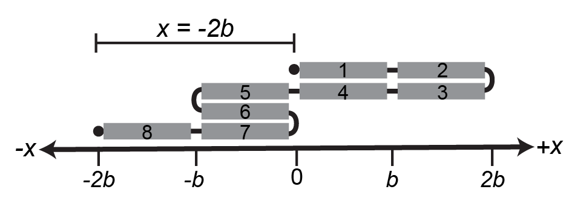
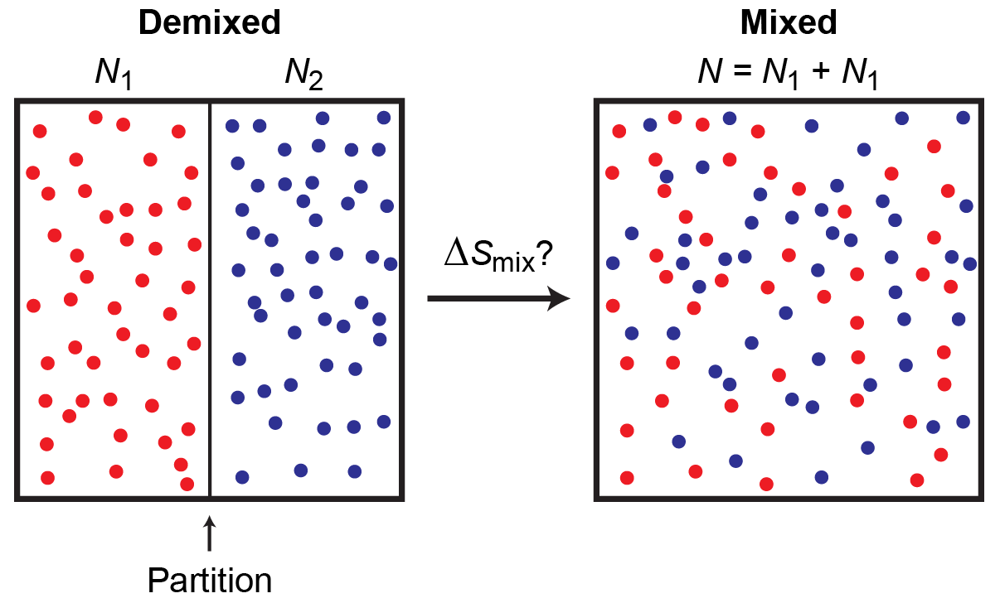
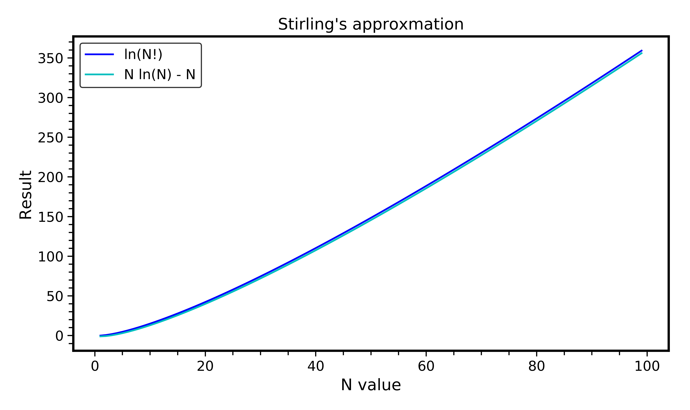
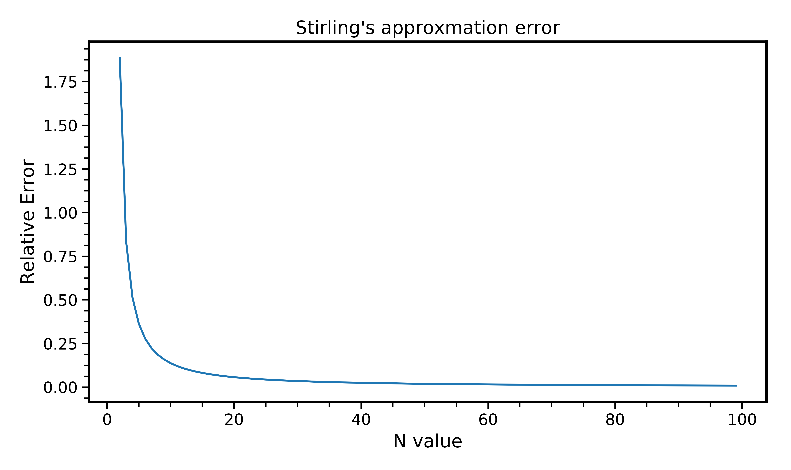

Problem Set 1 (Due Tuesday, September 19, 2023)#
Question 1: Polymer dimensions#
Ideal polymer chains are often described as undergoing random walks on a lattice. Like ideal gases, the monomers in an ideal polymer chain do not interact with each other; that is, the segments of the chain do not exclude volume and can overlap. Consider a one-dimensional ideal polymer chain composed of \(N\) independent segments.
One end of the chain is placed at the origin. A single chain conformation can then be generated by iteratively placing a single segment of the chain a distance \(b\) in either the positive or negative \(x\) dimension from the current chain end - i.e., the chain elongates by taking “steps” along the one-dimensional coordinate. The end-to-end distance of the chain, \(x\), is the distance between the origin and the end of the last segment placed.
 Figure 1 shows an example for \(N = 8\) in which the end-to-end distance is after all 8 steps are taken.
(a)
For a one-dimensional ideal chain with \(N\) segments and segment size \(b\), calculate the probability, \(p(x)\), that the end-to-end distance of the polymer is equal to \(x\). Assume that there is an equal likelihood of taking a step in either the positive or negative direction for each chain segment.
Hints
First compute the probability that we take n steps to the right.(b)
For the chain described in part a, using Stirling’s approximation, show that in the large \(N\) limit the probability distribution \(p(x)\) can be approximated by:
where \(C=\frac{1}{\sqrt{2\pi Nb^2}}\) is a normalization constant to enforce that \(\int_{-\infty}^{\infty} p(x) dx = 1\). Make sure to show how you obtain \(C\).
Hints
Define the quantity a = x/Nb, where a << 1 in the large N limit, and write a Taylor series expansion for ln(1-a) when appropriate.(c)
Show that the entropy of an ideal one-dimensional chain in the large \(N\) limit is given by:
\(S(N, x) = -\frac{k_Bx^2}{2Nb^2} + S(N) + k_B \ln{C}\).
where \(C\) is our normalizing constant from above, and S(N) is the x-independent entropy term.
Question 2: Magnetization of a paramagnet#
Consider a system of \(N\) distinguishable, non-interacting atoms with magnetic dipole moments (spins) in a magnetic field \(H\) at constant temperature. Each spin \(s_i\) has a magnetic moment \(\mu\) and can be in one of two states: parallel to the field (\(s_i = 1\)) or anti-parallel to the field (\(s_i = -1\)). The energy of each microstate is due only to interactions between the spins and the magnetic field, and is given by:
The magnetization of the material is defined as:
This model is commonly used to describe paramagnetic materials. In this problem, we will derive an expression for the ensemble-average magnetization of a paramagnet in a magnetic field.
(a)
Assuming that the paramagnet has a fixed energy \(E\), write an expression for the entropy as a function of the number of spins aligned with the field, \(N_+\), and the total number of spins, \(N\).
Hints
Use the [Boltzmann formulation](https://en.m.wikipedia.org/wiki/Boltzmann's_entropy_formula) for entropy.(b)
Show that the expression for \(N_+\) as a function of the number of spins \(N\), the magnetic field strength \(H\), the magnetic moment \(\mu\), and the temperature \(T\) (or as a function of \(\beta \equiv 1/k_B T\)) is
Hints
Procedurally, this is almost identical to our previous lecture.(c)
Show that the magnetization of a paramagnet is given by:
Question 3: Mixing entropy#
Consider two different ideal fluids containing \(N_1\) and \(N_2\) molecules, respectively, for a total of \(N\) molecules. All molecules exclude the same molar volume and are assumed to interact weakly with each other and with themselves, such that the potential energy of the system is negligible. The two fluids are initially completely demixed due to an impermeable partition; the partition is then removed and the fluids are allowed to mix at constant volume as illustrated in Figure 2. Assume also that the molecules of each fluid are indistinguishable from the molecules of the same fluid.

(a)
Assume that the two fluids occupy a fictitious lattice that spans the available volume. Each molecule occupies a single lattice site and all lattice sites are occupied; thus, there are are \(N_1\) lattice sites occupied by molecule 1 and \(N_2\) lattice sites occupied by molecule 2. Using this approximation, calculate \(\Omega(N_1, N_2)\), which is defined as the number of microstates for the mixture of fluids.
Hints
Identical arrangements of the fluids are indistinguishable.(b)
Derive an expression for the entropy change associated with mixing the two ideal fluids in terms of the mole fractions, \(x_1 = N_1/N\) and \(x_2 = N_2/N\), of the two components. That is, determine an expression for:
Hints
How many distinguishable configurations are there for totally demixed systems?(c)
Is the lattice model assumption reasonable for molecules occupying a continuous set of positions (rather than discrete points)? Why or why not?
Question 4: Stirling’s approximation#
Python Exercise
Write a Python program that calculates the percent error of Stirling’s approximation as a function of \(N\), where Stirling’s approximation is defined as:
Include with your solution a copy of your Python code (including comments as necessary), a plot of \(\ln N!\) and Stirling’s approximation as a function of \(N\) up to \(N=100\), and a plot of the error of Stirling’s approximation as a function of \(N\) up to \(N=100\). Your grade for this problem will be based in part on the readability of your code and plots in addition to the accuracy of the solution.
Note: this problem is intended to provide you with practice in Python programming prior to the assignment of the simulation project. If you need resources for learning to code in Python, see here.
The two requested plots are provided below.

